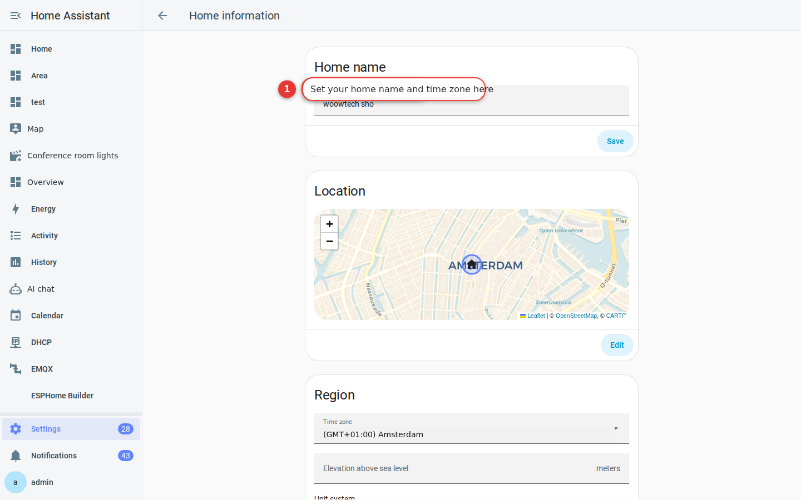

System settings
Set the time zone, language, units, currency, and location correctly. Home Assistant uses these values for sunrise and sunset, weather, temperatures, timestamps, and energy costs. A mistake here can affect every automation you build later.
Why this matters
Many Home Assistant automations depend on your location and time zone:
- “Turn on the entry light 30 minutes after sunset” requires the correct location.
- If you later create an automation that turns on a light at sunset, incorrect coordinates will make it run at the wrong time.
- “Turn on the air conditioner at 27°C” only works as intended when Home Assistant uses the correct temperature unit.
These settings take only a few minutes to check, but they affect everything that follows.
zone.home; Home Assistant creates that home zone with a radius of 100 meters around the coordinates you choose. Select the time zone, units, and currency separately. Home Assistant does not infer them from the map location.Open Settings
Select Settings, marked with a gear in the sidebar. This is the starting point for Home Assistant system configuration.

Configure your system
-
Open Home information
Go to Settings → System → Home information. In an earlier version, select General instead.

Figure 2-2 Home information includes the system name, time zone, units, and currency. -
Set the name and location of your home
Name: Use a name your household will recognize, such as “My Home.” This name can appear in phone notification titles.
Location: Drag the map pin to your home. Home Assistant uses this point as the center for determining whether someone is home or away.

Figure 2-3 Drag the location pin on the map. -
Choose the time zone and currency
Time zone: Choose your local IANA time zone. The zh-TW source uses
Asia/Taipei. Currency: Choose your local currency; the source example isTWD. These settings affect timestamps and the Energy dashboard. -
Choose the unit system
Unit system: Choose Metric for Celsius, millimeters of rainfall, and wind speed in m/s or km/h. Choose the system and individual units used in your region.
-
Save your changes
Select Save in the lower-right corner. Refresh the page if a changed value does not appear immediately.
Tip: If sunrise, sunset, or notification times later look wrong, return to this page and check every field.
Set your personal preferences
Concept: system settings and personal settings are different. The time zone, units, and currency apply to the whole system. Language, date format, and the first day of the week apply only to the current account. Two household members can therefore see different languages without anything being wrong.
The previous steps configured the home. To configure your account, select your name at the bottom of the sidebar, then open User profile. Earlier versions call this page User settings.
-
Language
Select English to change the interface language for your account immediately.

Figure 2-4 The Language field in the user profile. -
Time format and default dashboard
Time format: Choose a 24-hour or 12-hour clock. Default dashboard: Choose which dashboard opens after you sign in. The original default was Overview.
-
Theme
Choose one of the built-in options, including Backend-selected, which follows the system light or dark setting, and the default light and dark themes.
FAQ
Will changing the time zone alter earlier chart times?
Must the home location be exact?
Can each user choose a different language?
Next step: create a backup
You have completed the most important system settings. Before you configure more rooms and devices, create a backup. It gives you a clean point to restore if a later integration experiment goes wrong.
You can create the backup in about 3 minutes. Follow the instructions in Chapter 9.